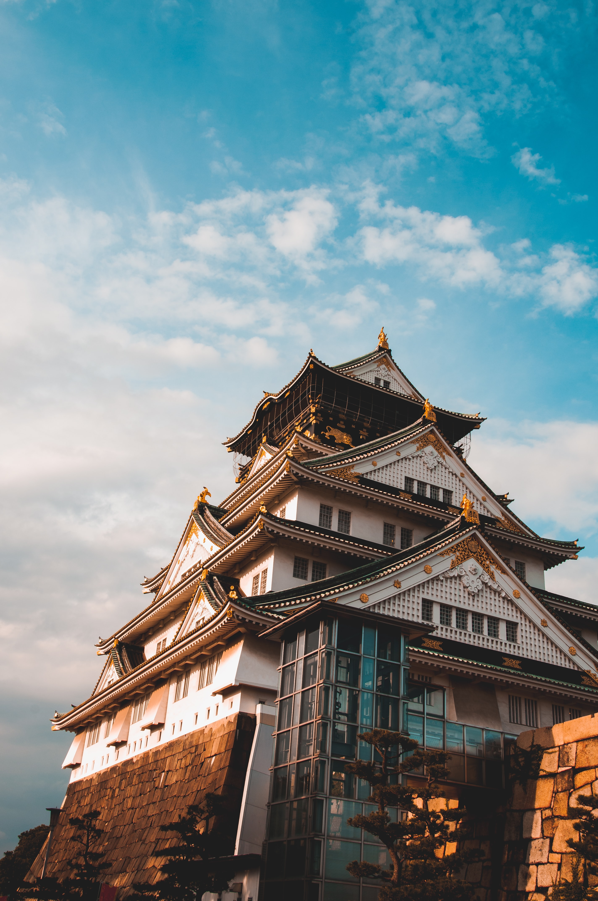
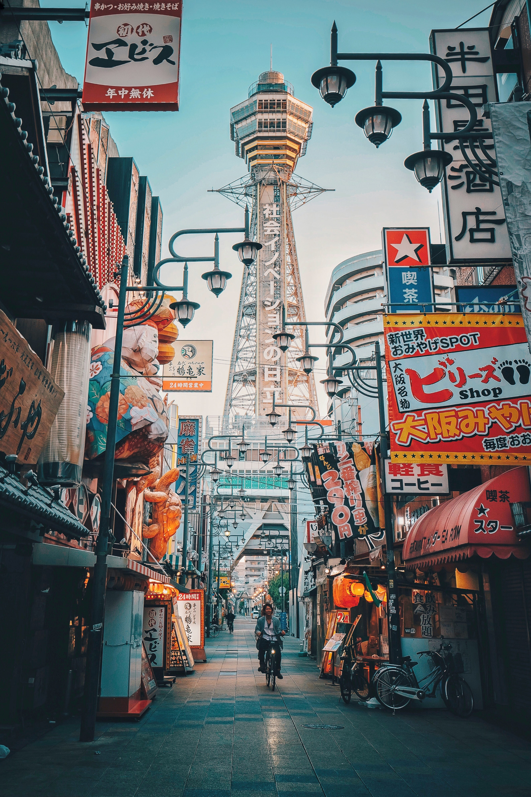

Top activities to do at Osaka

Visit Osaka Castle
Houses a museum with thousands of interesting artifacts!

Dine out and have fun at Dotonbori
Most famous tourist destination and renowned for its gaudy neon lights, extravagant signage, and the enormous variety of restaurants and bars.

Take pictures at Shinsekai
Rickshaw runners give tours of the area and around the Tustenkaku Tower the bright and gaudy signage of countless restaurants creates a lively scene.